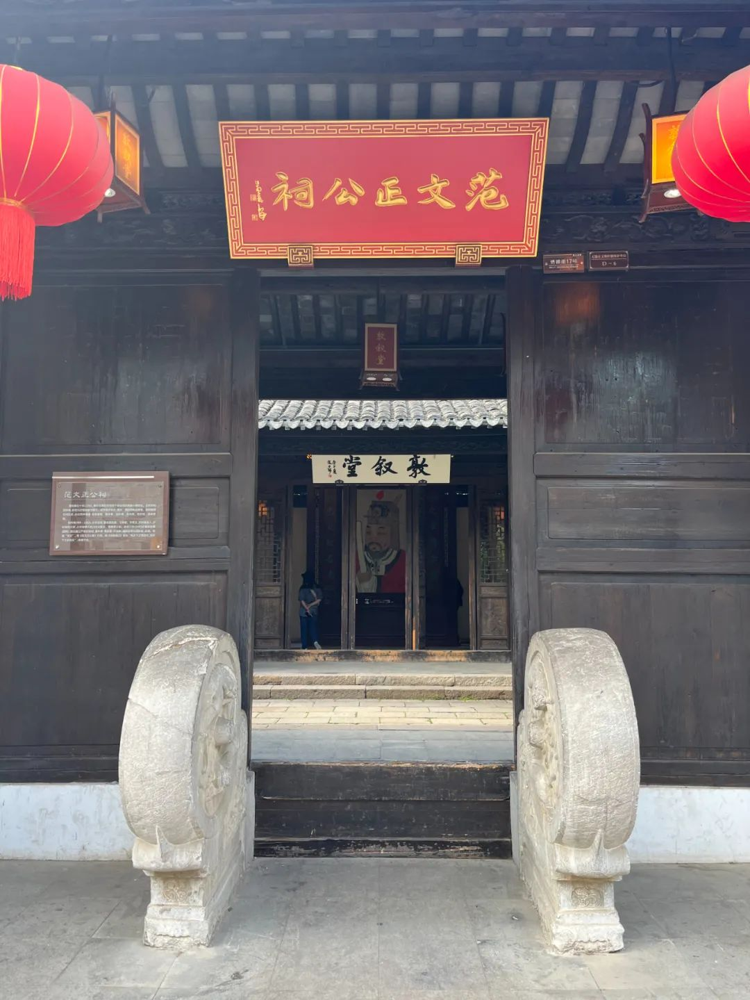

今天对话的这个时间点很特殊，一方面是五四运动，也是北大 125 周年校庆，另外大家如果在 Web 3 这个圈子，在朋友圈里或多或少会看到一帮人在黑山的 Zuzalu，以太坊核心圈子的一些人，还有一些 DAO 组织，Vita DAO，他们讨论长寿、永生、 network state、数字飞地以及一些超人类主义的一些问题。这是一个非常特殊的时间点。那今天我们想先要回到一个根本的问题，就是超人类主义的思潮到底是怎么来的，它在回应什么？胡老师之前上溯到这其实是在回答从尼采提出上帝已死那个问题之后的一种出路。那我想请胡老师你去从哲学的角度，先帮 Web 3 的朋友去做一个简单的科普，什么是尼采的上帝已死的这个问题，以及超人类主义为什么是沿着他给出的一种答案、一种回应？
胡翌霖：
当然这个也就是一家之言了，因为其实超人类主义，本身是一个比较宽泛的范畴，它有很多流派。而且超人类主义相当于是在 20 世纪后半叶才开始比较流行起来，特别是到 21 世纪更加流行。和尼采的概念的渊源我也只是随便说说：一方面，在概念上是有渊源的，因为我们知道尼采有个概念就叫“超人”，当然这是一个德文词了，有的时候就翻译成 Super man，有的时候翻译成Overman，其实翻译成 Transhuman 也可以，翻译成超人类也其实也可以。所以这个超人的概念是从尼采那里来的，而尼采代表了一个哲学传统的处境的决裂，当然尼采的超人和我们现在谈的超人类主义，它究竟有没有直接的关系是有争议的。因为尼采谈的超人更多的是一个人性的东西，它不是靠技术飞升。它是靠个人的道德重估、价值重估等等这样一些事情来讲的超人概念。而现在我们流行的超人类主义，它其实是一个技术飞升。就是靠各种技术，要么是什么数字化、意识上传，要么是基因改造，要么是什么赛博格、赛博朋克、人机共生等等。现在讲超人类主义，可能更多的是讲这些通过技术来改变人性，技术来让人变成不同的东西、不同的物种，这样的一个目的。我觉得从诉求上来说、精神旨趣上来说，其实是有一脉相承的关联。超人类主义某种意义上其实是扮演了我们现在世俗化时代的宗教的地位。原来在古代人那里，是没有这种超人类的概念的。不仅仅是因为古代人技术不发达，而是因为古代人，特别是古代西方人，对于人的升华、人的超越是有另一个寄托的——寄托在彼岸世界、宗教的世界，所以说不会追求用技术来飞升。他们追求的是灵魂飞升，接受上帝的审判，审判完了之后飞升天国。在古代有神学的信仰的社会，一般是这样来寄托自己的有限的生命的意义。关键无非就是要解答生命很有限，然后这个世界还很糟糕，那我们人的意义是什么？人应该要成为一个什么样的东西？最后要是成为一抔黄土，那意义何在，对吧？古代人要通过神学信仰许诺的灵魂飞升来回答意义问题，而尼采说了一句话，上帝死了，这是我们现代人的一个处境。上帝死了，彼岸的信仰寄托不了人生意义了，就是说“人活着最后要怎么样超越自己的有限的生命？”这个问题宗教回答不了了，那么取而代之的是什么呢？宗教是被谁干跑的呢？被科技干跑的。那么好了，科技既然干跑了宗教，那么只能靠科技来回答这个超越性的问题——人怎么样去超越自己的有限的生命，能够获得意义，获得这些永恒不朽的意义。所以这个时候超人类主义我觉得就是扮演了这样一个角色，填补了这样一个空白，上帝死了的空白。彼岸不能提供超越性，谁来提供超越性呢？科技来提供超越性。科技怎么来提供呢？这就是超人类主义的种种的诉求和方向。这是我的一家之言。
03
超越何方
——超人类主义的陷阱与危险
baiyu：
你自己怎么看待这样的超人类主义的一个方案呢？当然它的流派很多了，我也没有办法很清楚的给它归纳出来，但是我们知道它有一些共性。比如说很迷信科技可以让人的寿命延长，甚至期待永生，然后用 AI 的工具，有财富去做更多的事情，让人成为神。没有彼岸了，那我就自己成为那个彼岸。这好像跟我们的文化传统、我们的思路不是很相关。可以请你先做一下你的评价或者看法吗？
谢谢胡老师，太精彩了。今天这个时代，很多时候我们在享受科技发展带来的便利，但其实更多的问题恰恰又是由于科技的快速发展导致的。就是说我们的制度，我们对新的文明的思考、或者说它的配套是没有跟上的，我觉得如果我们继续沿着技术的路径——技术飞升、超人类主义的路径，就感觉在加速，这个事就没头了。我觉得你刚才举的韩国的那个例子特别好。刚好前段时间我们也在硅谷聊了一场关于AI，聊下来大家很绝望。但其实我知道哲学界普遍大家会认为 ChatGPT 代表的AI，其实并没有人的智能，它只是一种联想，一种大数据的统计。但有一种危险，我跟一些朋友聊下来，大家一致是认同的，就是 AI 更大的危险不是 AI 对人的奴役，而是人和人之间的战争。就是我们用 AI 作为武器，然后一部分国家、一部分公司对其他的人的一种霸凌。所以归根结底最后还是人之间的问题，是政治、是非技术的因素。
是这样的，就是虽然我在强调复兴，但是我没有说就是我们逆势而动，明知不可为而为之，一定要复古，崇尚古代，贬低科技的发展，我绝对是没有这个意思的。科技的发展当然是好事，但是你永远是要把它当做手段，而不是目的，科技的发展不是目的本身，你的目的永远是人本身。说得自私一点是为了自己，说的无私一点是为了人类。你不是为了科技而发展科技，你是为了人类而发展科技。所以说你首先还是要想清楚，人到底求什么。因为你可想而知，科技再怎么发展，也无非就是人多活了 20 岁，多活了 30 岁，你不可能说多活万万岁，永生不死，你哪怕永生不死，你还是要解决生活的意义的问题。不然不就是也像尼采讲的永恒轮回，佛教讲的那个永恒轮回，永世不能超脱。如果你本身没有找到生命的意义，没有找到人的意义的话，那科技发展得再怎么样，它其实对于人的意义的寻求反而是破坏性的。因为科技的发展永远是紧迫的，那紧迫的追求永远会压倒所谓玄学的追求。所以你救亡永远救不完，因为你稍微落后一点，你就有生存危机了，所以你不能够等到救完亡之后，才开始考虑启蒙的问题，考虑生命意义的问题，而是在一开始就要考虑，不然就永远也没时间、没机会去考虑这个问题。所以我不是说要反对西方化、反对科技。不管是北京、上海、迪拜，都要现代化，都要发展科技，这个我觉得没有什么问题。但是我要强调的就是，在发展科技的同时，或者是更早，需要讨论这样一个意义和价值的归宿的问题。这是我对你前面说的补充。我刚才一直讲五四的年代，科学派的胜出是情有可原，因为当时是西方化和科学技术的力量是大势所趋。而现在，某种意义上又有一个新的技术趋势。关注到我们这个对话的，大家首先是会关注到所谓的 Web 3，或者区块链，或者 DAO 这样一些新的科技的趋势。我们当然会觉得这些科技趋势可能是代表着一个新的动向，或者是时代发展的一个趋势。那么我们顺应这个新的趋势有没有可能去做一些价值先行？我前面一直强调，你不能等到发展完科技，你才来讨论价值问题，因为你永远等不完，对吧？科技发展不完的，所以我们看着这个趋势，我们就先讨论价值复兴的这样一个问题。所以我觉得现在正是这样一个时候。而历史给我们的是什么呢？历史给我们的不是一些可以直接或拿过来参考的方针方法，肯定不是这种，而是一些启发，或者说大的思路是什么。所以本质上说，我与其想要去强调中国古代的一些传统精神，不如说我还是要强调我们区块链技术所内涵的一种基本的精神，而我觉得这种精神恰好和中国传统的精神是匹配的。
这个就有点喧宾夺主了，因为我们现在是在 SeeDAO主场。当然这也是我们 Web 3 时代的一个特点，就是说我们可以同时搞很多的 DAO，你可以 DAO 中做 DAO ，一个人可以搞多个试验。因为我们传统上你要去搞一个社会革命，那真的是要抛头颅，撒热血，也不可能你既参加这边的游击队，又参加那边的革命党。但是我们现在可以说有多重的试探方式，每一个 DAO 都可以有它的一种组织方式，自己的纲领，它们之间有互通也有微妙的区别，所以这也是一个好处。我之前设想的这个“华文道”就是也没有真正跑起来，我们看看能不能将来找到一些主理人，行动力比较强的人，或者是和 SeeDAO 之类的其他的 DAO 合作，我们再跑跑看。简单来说是这样，我们立足于中华文化，在 DAO 的时代、在 Web 3 的时代去探索一种治理方式。DAO 的好处就是说我们可以有无数个探索。去探索什么呢？就是去探索一种适应于新时代的治理方式。那么我设想的探索的治理方式，其实就是复兴史官文化。因为历史不仅仅是简单地说事无巨细地记录下来：我今天打了个喷嚏，明天我摔了一跤，事无巨细都记录下来，这个其实构不成历史。真正要尊重历史，一方面有一个底层的东西，就是说我们能够刻录下来，能够有区块链来记录下账本。但是另一个很重要的问题就是要去甄别什么东西重要：哪一些事件是重要的，哪一些事件是值得更多的去花费笔墨的，哪一些事件是次要的，哪一些事件是无关紧要的。尊重历史还有这样一个维度，这个维度其实就是需要去用社区去治理来解决的。注重历史，其实不是中国的特色，西方人也注重，西方的科学家也是争个优先权争得头破血流，到底谁冠名这个符号，也是要争个头破血流。所有的文化都有对历史的尊重，对功绩承认的尊重。中国古代的好处就是把对历史的尊重制度化了，通过一整套的史官体制，专门的书记员，以一些制度化的流程来书写历史。书写历史的很重要的一个环节就是说要评定。所以中国古代的历史向来都不是简单的、单纯的事件记录，它是要评定的。所以我们说盖棺论定。什么叫盖棺论定？就是你一个人的评定，一定要等你死了之后才能够定下来评论，才能够定下来你是什么样的一个人。因为你不死，你随时可能晚节不保。盖棺之后论定有一整套的流程，皇帝的流程是最多的，其他的普通人也有自己的一些机制，把它记录下来，把它编撰起来。

所以我的设想就是说我要搞一个 DAO，它就建立在这个方面，一方面当然是弘扬中国文化。我当时设想的就是，我们的 DAO 发行的会员标识NFT，我们就发行《千字文》，非常优美的，「天地玄黄、宇宙洪荒」，就是出自《千字文》，每人一个字。然后你们要是形成组织，可以组词。字是中国的文化特色，然后这个字是可以留名，你怎么样去留一个名字，用字来承载你的名声，这是一个基本的单元，就是你的社区参与者是以字或者词作为一个身份认同的标识。然后这个社区干什么事？这个社区的核心活动就是修历史。修什么历史？当然一个部分就是社区内部本身的历史。社区什么时候建立、什么时候发展，做了些什么事情？这些东西我们都记录下来，不仅要记录下来，而且要去编撰。编撰是什么意思？就是衡量功绩。你这个人到底有多少功劳？你这个人到底做了这件事情能够记录多少？比如说通过 SBT 等等记下来。但是是通过社区的讨论，而不是通过个别的、少数人的一锤定音，当然最后的编撰，总是需要少数人去编撰的，但是价值的评定这些东西可以是一个社区的工作，这是第一方面。当然第二方面就是对社区之外的事情记录历史，最理想的范畴就是：我们是新时代的史官。我们对包括中国传统，包括民国史五四运动史等等，这些东西也应该有一个去中心化的方式去记录它、编撰它，这是最大的一个理想，就把二十四史续上，把清史、民国史续上。小的立场就是，我们 Web 3 世界，也需要历史，对吧？现在我们说整个中国人，整个华人群体在这个 Web 3 世界的形象是很差的。因为人家一说你就是割韭菜、急功近利，不做什么好事。但其实我们知道华人做的贡献是不少的，其实也有很多很积极的、很重要的工作。这些东西我觉得都应该有一个系统的记录，把它们编撰起来，也翻译成英文，给老外看看，也翻译成中文，让自己人看看，不要很多我们自己中国人其实也都不了解，进入这个圈子就先找什么地方薅羊毛，什么地方割韭菜，是吧？他们不知道我们有一些非常积极的、非常重要的贡献，非常好的成果。当然也有一些是失败了，但是它也是值得铭记的一些事迹。这些东西我觉得就需要有一个组织去把它们整理起来，把它们记录下来，而且要做一个评定。也包括国外的项目，就比如说我们现在说那些 NFT 项目，什么 DAO 项目，他们到底有哪些黑历史，他们到底怎么火起来的，做了些什么事情，怎么有些项目又衰败了，有些还能够很热闹，这些事情也是值得去记录的。所以我觉得现在世界上就缺了一批记录者，而且这个记录者应该是要有一套文化、有一套规范、有一套制度去记录，顺应区块链的基本特点去中心化和尊重历史，以这样一个基本的态度去记录。所以我当时是想搞这样一个 DAO ，但是暂时还没有搞起来，当然慢慢酝酿，说不定还可以再搞一搞。当然我也希望，即便我们自己不把华文道搞起来，其他的 DAO 包括 SeeDAO ，也能够听到我的忽悠，能够去重视这一块的建设，或者是做一些合作也好，或者是做一些独立的创新也好，就是把记史的社区化、制度化这件事情做起来。
就光有原材料不够，浩如烟海的史料，而且现在也有 AR ，去中心化存储的那样的基础设施，以太坊其实也能存东西，但是编撰，把它整理成线索，变成可读的历史，这也是非常重要。我们要记史，肯定不是说完全恢复到太史公他一个人，或者个别史官来记，而是要有一种机制，有一种去中心化的机制，或者 DAO 的机制，总之是有主创，但也有社区的意见，大家也可以一起来，就有点像上链的过程，就是我们要把东西要上链打包，打包之前其实有一个共识机制，得建立一个共识机制来修这个史。
胡翌霖：
对，就是你完全应该像区块链机制那样，是要有人打包的，那个打包者毕竟还是少数人，你不能所有人都动笔写，你写一句，我写一句，那肯定是一团乱七八糟的东西。一部历史的主笔可能也就是几个人，但是这个主笔所反映的一些价值取向，以及一些基本的判断，这个事情是需要共识的。其实中国古代太史公他们编史，也是有共识的，也不是一个人的事。但是总的来说还是一小撮人，一个专门的史官群体，甚至是帝王将相本身，他们来决定，这个就不够去中心化，真正去中心化就是我们还是要把这个机制变成一种自下而上的，能够把历史写出来的机制，这个机制其实就直接可以用区块链的机制，大家竞争打包，打包完了之后，你如果不满意你可以分叉，回到前一个区块后面再续写，对吧？其实完全就可以按照区块链精神来做这个事情。当然这个不能完全是靠算力竞争，可能还是需要有一个社区的机制。比如说我们搞一个 DAO，这个 DAO 里头有一定的投票权，这个投票权和你的身份，和你的贡献等等有关，然后你再去投票来决定历史的编撰的取向等等，这样是能够兼顾于去中心化和区块链不可篡改历史的这种方式。
你刚才讨论的那个东西启发了我，就是除了你直接可以把历史的片段当做 NFT，然后去发售。因为我前段时间跟有一个项目聊过，叫 likecoin，他们自己在 cosmos 上19 年就做了一条链，这条链专门就是用来做出版的，做去中心化出版，就是我可以出版我的书籍。而且更酷的是，它把 ISBN 的那一套系统写在底层了，它自己建了一个ISCN，世界上每一本通过它发行的书籍都有一个唯一的编号。其次就是它提供了一整套的底层，在链的层面提供了一套设施，让每个人都可以去创建一个自己的链上的图书馆。我们知道图书馆的信息系统其实挺复杂的，一般一个人是做不了的。
我想说什么呢？其实我刚才听下来，就咱们那个历史，它是一个一个的区块的，然后它是一条一条的交易信息，那我其实完全可以把它当做是一个社会的底层的基础设施。你看我们写史书，或者说你们作为学者去写研究文章，你们经常是要引用的，你是要引用那个历史的，就是说我再去发散。这个过程完全就有点像你在公链上去做一个应用，你就是在引用它，你在调用底层 SDK，你在调用底层的接口。在 NFT 二创里面，其实经常大家会讲一个逻辑，就是说我可以改变原来的授权的模式，原来 IP 要授权是，你先要给我一笔钱，然后我再把 IP 授权给你，你去做 NFT 二创。但这个过程完全可以反过来，就是说你授权给他，只有他卖出去了钱的时候，比如说他写了一本很好的书，这本书卖出去了，他有收益，他引用了谁，谁给他授权的，然后他反过来再给那个钱，其实这样的话底层就也能够赚到钱。
我觉得你这个部分说的更大了，我觉得这个设想是更重要的一个设想，就是说它不仅是历史了。某种意义上是图书馆，但是图书馆某种意义上，你可以说图书馆保存的就是历史，每一本书，不管它是什么书，其实本质上都是记录。所以这也涉及到就是这样一个问题，我前面讲的，散装的历史记录本身是不够的，它需要层级，一层一层的去提炼、去编撰。做学术也是这样，仍然还是需要有一个遴选的机制，包括像图书馆也是这样，图书馆不是说你书越多越好，而是说书要有一个遴选的机制，你要选择好的书，以一个分门别类、能够便于索引的方式去把它组织起来。所以其实我觉得这个方向是大有可为的，不仅仅是编撰历史，而是说把这种文献、资料、数据等等，它其实都可以做一个遴选和编撰的工作。所以我们设想的就是，这个工作首先不能完全靠散兵有勇自发的去做，而是说应该有一些社会化、社区化的机制，或者用 DAO 的机制来去承担这样的工作。另一方面让这些工作能够有一个长期经济利益的一个反馈。比如说我要把传统对标于图书馆的布置，怎么选书怎么布置怎么排列，像这样一些工作。包括做学术，你是怎么引用、怎么样去文献综述等等这样一些工作，把它变成产品，那么可能可以起到一个比较机制化，能够永远的、长期的坚持下去，能够不断的发展壮大的这样一种机制。而不是随便你搞一下，我搞一下这样的一个机制。可能这方面是我们可以带着我们的中国智慧，带着我们的独特的一些组织去做的。
baiyu：
我们今天聊了很多的关键词，西方的、上帝已死之后出路的问题，中国这边的史学的传统，然后胡老师引出了区块链作为历史账本，去中心化、不可篡改两个核心的概念。然后我们可以做的，像华文 DAO 的事情，华文 DAO 现在缺一个主理人，胡老师他们有几个朋友，白皮书也写了，理念都有了，现在缺一个能够牵头统筹去执行的主理人。如果听众当中大家对这件事情感兴趣，也可以联系到 SeeDAO 这边，或者直接找胡老师那边，大家可以去尝试一下。以及更大的，我们后面又聊到了区块链甚至可以作为底层的那个账本，可以是一个一个的块来记历史，这个历史又可以被上层的 NFT 引用之后，甚至可能经济上也可以循环起来，胡老师也给出了他的方案。这是我们今天讨论的主要的一些内容。
🗣 关于 DAO 黑山
今年5.22在黑山将举办DAO Conference，探讨全球 DAO/Network State 探索者所关注最前沿的议题，与世界范围内 DAO实践者一起交流经验、共享生态、讨论未来。这次，我们关注的焦点是全球危机下的组织挑战。